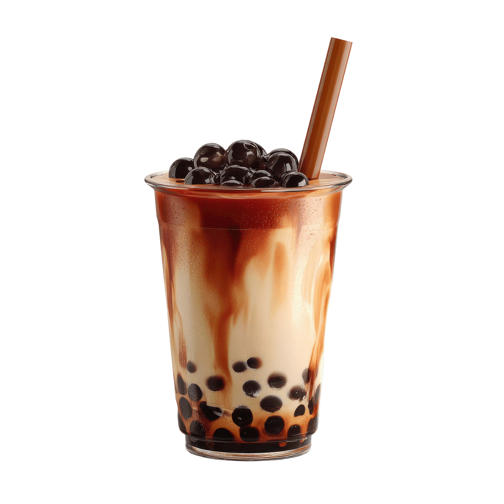
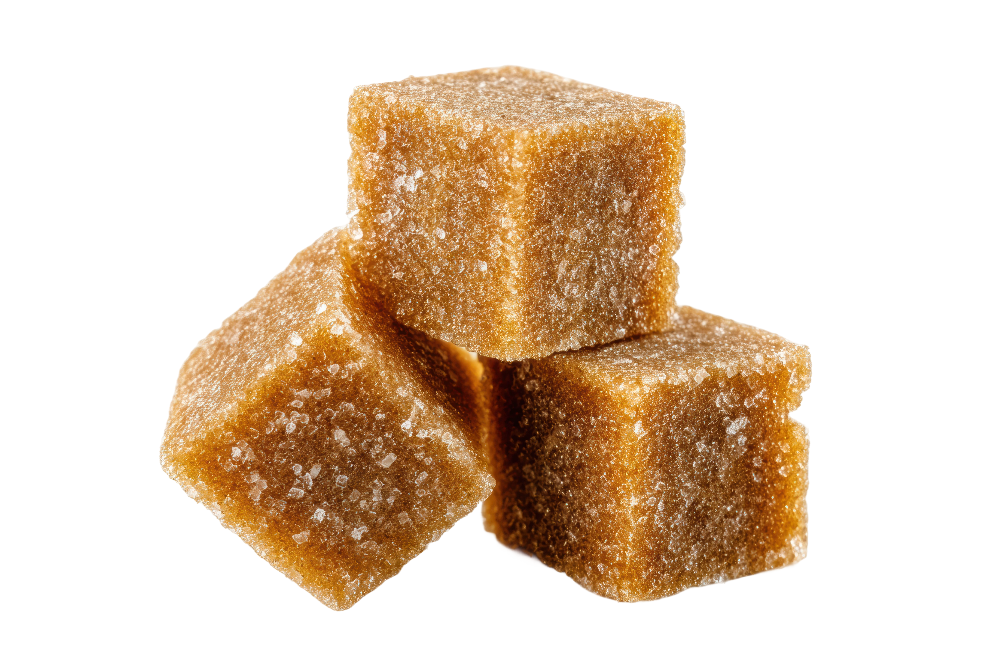
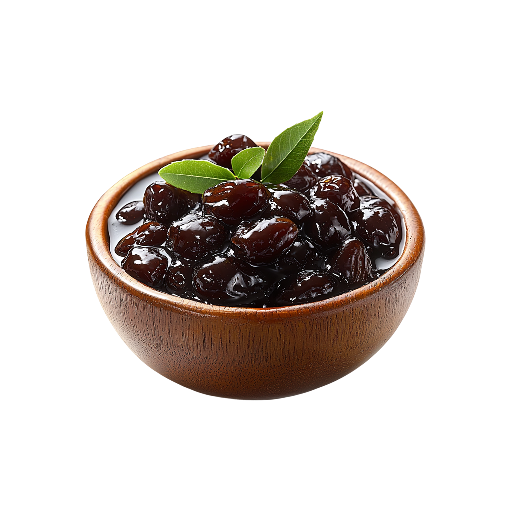
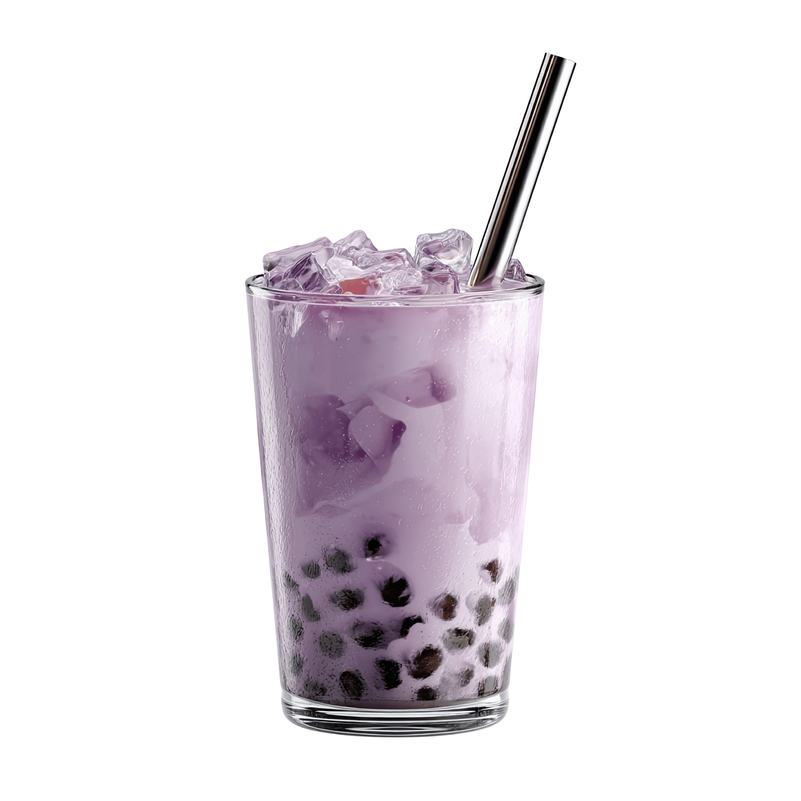
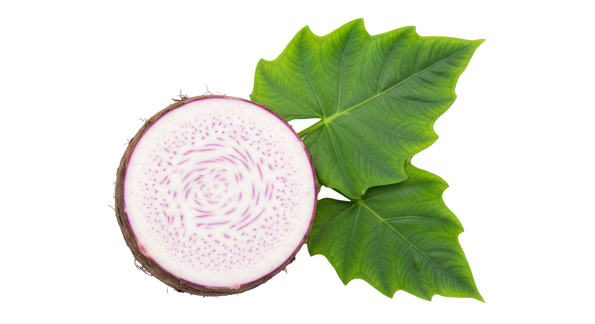
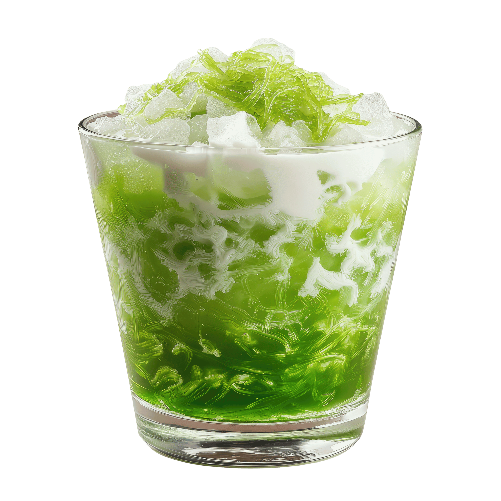
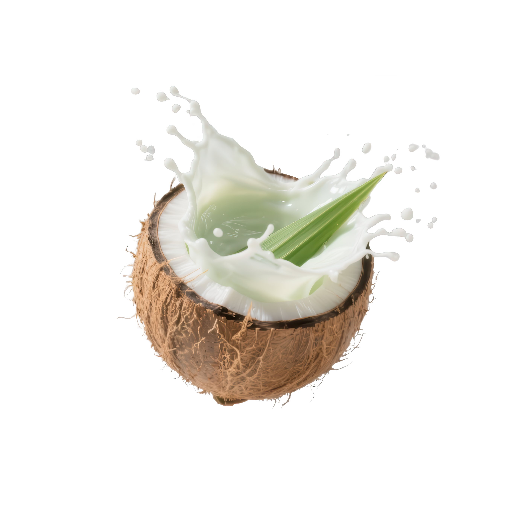

Brown Sugar Milk Tea
Indulge in the rich, caramelized sweetness of our hand-crafted Brown Sugar Boba. Each chewy pearl is lovingly simmered in golden brown sugar syrup, creating a warm, comforting flavor that dances perfectly with our creamy milk base. A timeless classic elevated for the true boba connoisseur.
Taro Latte
Experience the velvety smoothness of our Taro Milk Tea, where natural taro root is blended into a subtly sweet, nutty, and floral milk tea. Each cup is meticulously prepared to balance its delicate flavors, delivering a vibrant purple-hued drink that’s as beautiful as it is delicious.
Pandan Tea Latte
Savor the tropical elegance of our hand-crafted Pandan Tea Latte. Fresh pandan leaves are infused into a creamy coconut milk base, creating a fragrant, subtly sweet, and nutty drink. Each sip is a harmonious balance of floral and tropical flavors—truly a handcrafted delight.